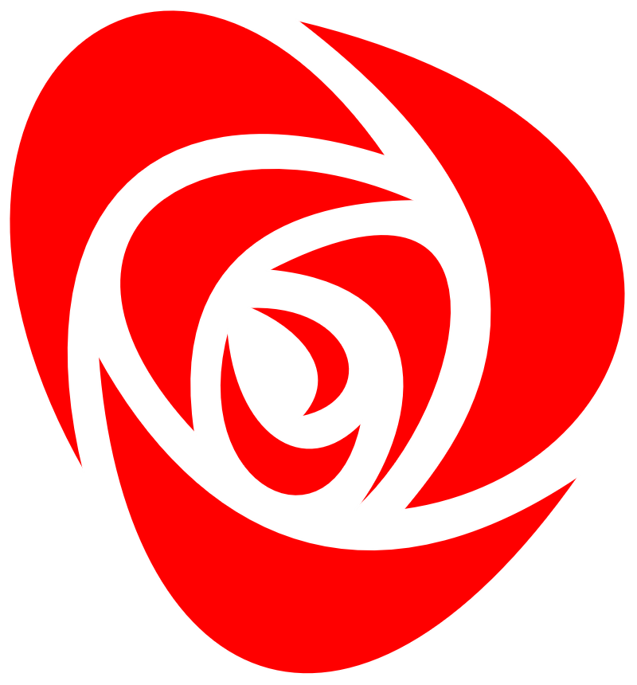

Arbeiderpartiet
Home
Grorud nå
Bydel Grorud
Framtida med Grorud
Bydelsutvalgskandidater
Kandidat-1
Kandidat-2
Kandidat-3
Kandidat-4
Kandidat-5
Kandidat-6
Til deg som er gla i Groruddalen
Det betyr noe hvem som styrer byen
Din. Vi bygger sterkere fellesskap.
Anders Røberg-Larsen,
1.kandidat i Grorud
Raymond Johansen,
Byrådslederkandidat